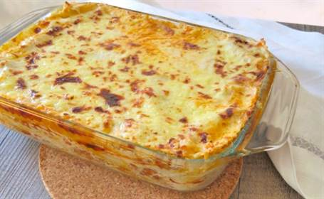

Preparacion
1.- Prepara el relleno. Coloca un poco de aceite de oliva en una sartén al fuego y añade la carne picada con sal y pimienta al gusto. Ve moviendo y separando la carne con el fuego bastante vivo. Añade la cebolla, picada a cuchillo, cuando la carne esté ya dorada. Sigue removiendo y, tras 4 o 5 minutos, cuando la cebolla ya se empiece a cocinar, añade el vino blanco. Pon el fuego moderado y, cuando el alcohol haya reducido, añade la salsa de tomate. Remueve bien y deja que reduzca un poco el tomate. Cuando consigas la consistencia que quieres para tu relleno, retira la sartén del fuego.
2.- Cuece la pasta. Pon una olla con abundante agua y un poco de sal al fuego. Cuando el agua empiece a hervir, introduce las placas una a una. Cuece la pasta según lo que te marque el fabricante.
3.- Preparara la bechamel. Derrite la mantequilla en una sartén al fuego y añade una cucharada bien colmada de harina. Tuesta un poquito la harina y añade la leche caliente poco a poco sin dejar de remover. Añade una punta de pimienta negra, otra de nuez moscada y un poco de sal. Espera a que empiece a hervir de nuevo y ya tienes la bechamel preparada.
4.- Enfría la pasta. Ve quitando el agua caliente de la cazuela y deja que entre agua fría para que se corte la cocción de la pasta. Deja las placas sobre un trapo.
5.- Monta la lasaña. Pon unas cucharadas de bechamel en la base de la bandeja para que no se pegue la lasaña. Añade la primera capa de placas haciéndolas coincidir unas encima de otras para que no se muevan. Coloca encima una capa de queso y, encima, una capa de carne bien extendida. Continúa con otra capa de pasta, otra de queso, y otro de carne. Puedes hacer las capas de relleno que quieras. Termina la lasaña con una capa de pasta y añade bechamel y queso rallado que funda bien.
6.- Introduce la lasaña de carne y queso, tapada con papel de aluminio, en el horno sin precalentar. Yo la he tenido 30 minutos a 220 grados con calor arriba y abajo. Retira el papel de aluminio con mucho cuidado porque puede pegarse. Vuelve a introducir la lasaña aproximadamente 10 minutos con calor solo arriba y temperatura máxima para que se gratine por encima.

Paguina de inicio